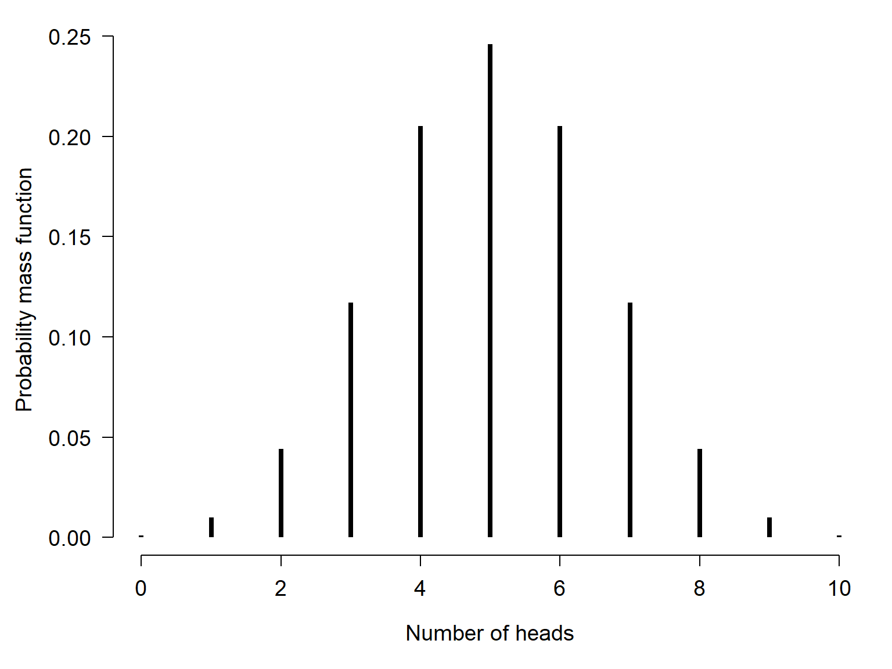
21 GLM for categorical and proportional responses
This section explores GLMs for binary outcomes and proportions. Binary outcomes are results that take one of two values such as survival vs. non-survival, presence vs. absence, reproduction vs. not-reproducing, and so on. These data are usually coded as 1 and 0: 1 when the event occurs, and 0 when the event does not. No other values are allowed. The standard technique for modeling binary outcomes is logistic regression. This name refers to a GLM with a binomial family and logit link function.
Proportions are values between 0 and 1 that express how often an event occurs out of some number of trials. For example, 45 out of 50 fish survive, or 13 out of 20 flies express a mutant phenotype. Proportions may be expressed as decimals between 0 and 1, or as percentages, or even as counts if the denominator is known. Proportions are modeled by binomial GLM, which is a GLM with a binomial family, logit link function, and a weights argument that defines the denominator of each observation.
TipThe Bernoulli and the Binomial
The binomial distribution describes the number of successes in a series of \(n\) trials, where each trial must see one of two outcomes with probability \(p\). By convention, we denote successes as 1 and other outcomes as 0.
For example, if you flip a fair coin one time, that is one trial. The coin will come up heads with probability 0.5. If you flip the coin 10 times and get heads 4 times, then your observation (10 coin flips) had 10 trials (each flip) and 4 successes (times that heads came up). The long run frequency of numbers of heads in different sets of 10 trials is described by a binomial distribution:
\[n_{heads}\sim Binomial\left(p=0.5, n=10\right) \]
The distribution of outcomes is shown below:
The Bernoulli distribution is the special case of the binomial distribution where \(n=1\). This is why the stochastic part of logistic regression is
\[y_i\sim \text{Bernoulli}\left(p=p_i\right)\]
or equivalently
\[y_i\sim \text{Binomial}\left(p=p_i, n=1\right)\]
while the stochastic part of binomial regression is
\[y_i\sim \text{Binomial}\left(p=p_i, n=n_i\right)\]
21.1 Logistic GLM for binary responses
Logistic regression is a technique for modeling the probability of a binary outcome: survival vs. death, reproductive vs. not reproductive, present vs. absent, etc. The response variable Y takes value 1 when the event occurs, and value 0 when the event does not occur. For each observation i, success occurs as the outcome of a Bernoulli trial with probability \(p_i\). The logit of \(p_i\) (i.e., the logarithm of the odds that \(y_i=1\)) is modeled as a linear function of the predictor variables.
\[y_i\sim \text{Bernoulli}\left(p=p_i\right)\]
\[\text{logit}\left(p_i\right)=\log{\left(\frac{p_i}{1-p_i}\right)}=\boldsymbol{\beta}\mathbf{x}\]
The logit link function is available in R as qlogis(). The inverse of the logit function is the logistic function:
\[logistic\left(x\right)=\frac{e^x}{1+e^x}\]
and is available in R as plogis().
The linear predictor in logistic regression predicts the “log-odds” of an event occurring. The unit of the log-odds scale is the logistic unit, or logit. The logit link function is useful because it allows the outcome of a linear function–which can take on any real value–to be mapped smoothly to the natural domain of probabilities, the open interval \(\left(0,1\right)\). A key consequence of this link function is that increasing the value of one of the predictor variables by 1 will scale the log-odds by a constant. That constant is the coefficient estimated for the predictor.
The logistic regression model was developed in the 1940s, decades before the GLM was first proposed. Part of the development of the idea of the GLM was recognizing that many previously known models were actually special cases of a more general model. In GLM terms, we say that logistic regression is a GLM with a binomial family and logit link function.
21.1.1 Example using simulated data
As with the other GLM applications, we’ll start by simulating a suitable dataset and analyzing it. The code below will execute the simulation. Remember to set the random number seed for reproducibility.
set.seed(123)
n <- 100
x <- round(runif(n, 0, 12), 1)
# coefficients
beta0 <- -4
beta1 <- 0.8
# linear predictor
eta <- beta0 + beta1 * x
# logistic function (inverse link)
prob <- plogis(eta)
# draw y values (stochastic part)
y <- rbinom(n, 1, prob)
# assemble dataset
db <- data.frame(x=x, y=y)Unlike other sorts of regression problems, plotting \(y\) vs. \(x\) isn’t very illuminating.
par(mar=c(5.1, 5.1, 1.1, 1.1))
plot(db$x, db$y)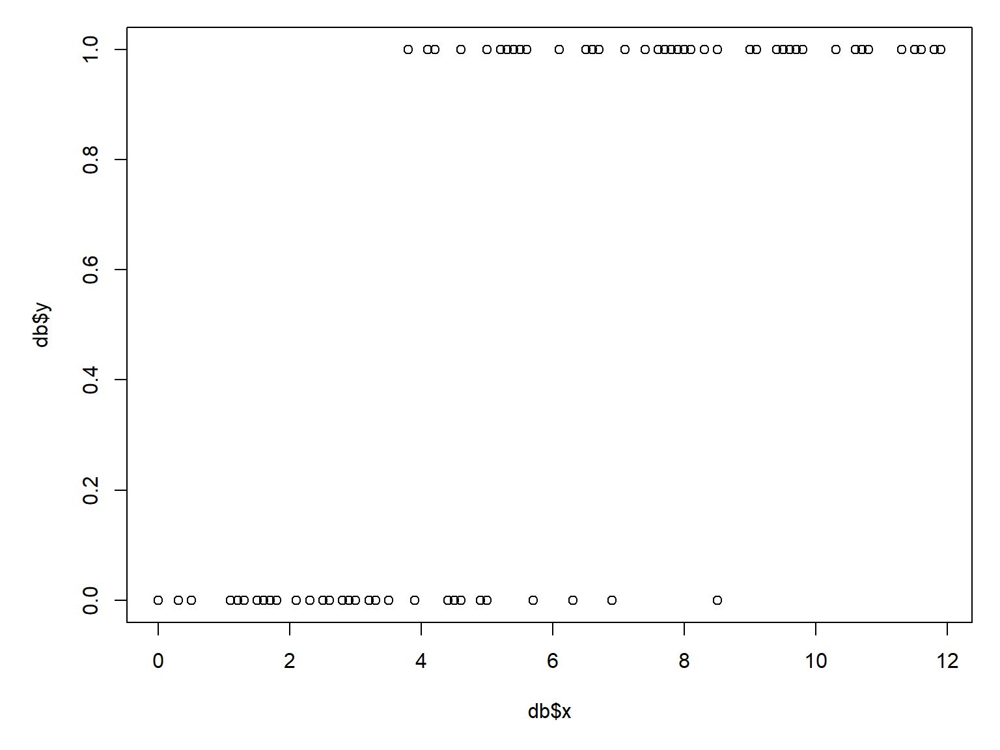
If you have a lot of duplicate coordinates, it can be hard to get a sense of how many 0s and 1s are in the dataset. The scatterplot above is also a little silly because most of the Y-axis range is not occupied. We can use function jitter() to add some random noise to the \(y\)-values; this will help us see what is going on.
par(mar=c(5.1, 5.1, 1.1, 1.1))
plot(x, jitter(y, amount=0.05))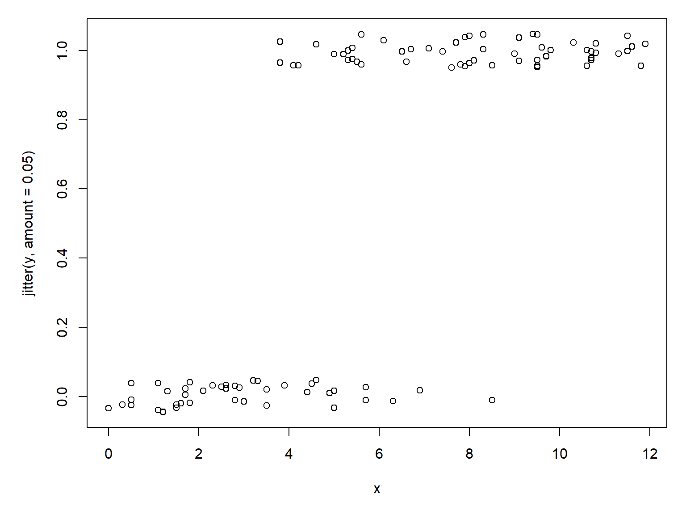
Another way to explore binary data is with a boxplot. A boxplot can show whether \(x\) tends to be smaller or greater when \(y\) = 1; this is sort of the reverse of the question we are really asking, but it helps us make sense of the data as we explore.
par(mar=c(5.1, 5.1, 1.1, 1.1))
boxplot(x~y)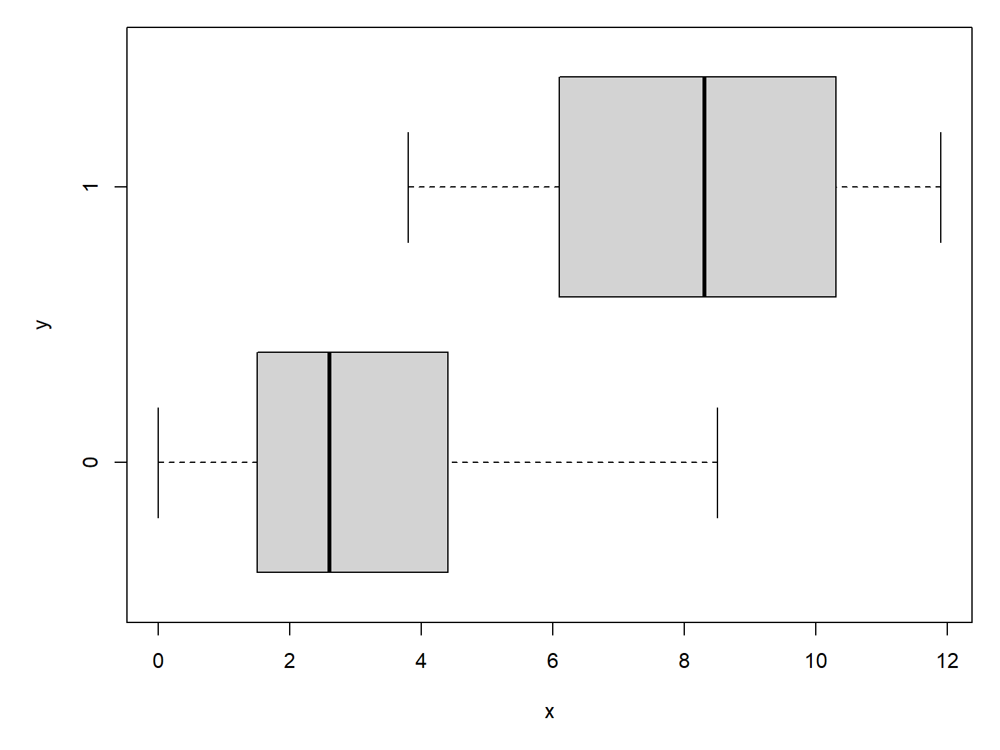
The boxplot agrees with the scatterplot: \(y\) seems more likely to occur at greater values of \(x\). Making the boxplot horizontal makes the pattern easier to see:
par(mar=c(5.1, 5.1, 1.1, 1.1))
boxplot(x~y, horizontal=TRUE)
Logistic regression is fit using the glm() function with family=binomial. You don’t need to specify the link function in R, as the binomial family uses the logit link function by default.
mod1 <- glm(y~x, data=db, family=binomial)
summary(mod1)
Call:
glm(formula = y ~ x, family = binomial, data = db)
Coefficients:
Estimate Std. Error z value Pr(>|z|)
(Intercept) -5.0036 1.0757 -4.652 3.29e-06 ***
x 1.0059 0.2059 4.886 1.03e-06 ***
---
Signif. codes: 0 '***' 0.001 '**' 0.01 '*' 0.05 '.' 0.1 ' ' 1
(Dispersion parameter for binomial family taken to be 1)
Null deviance: 136.058 on 99 degrees of freedom
Residual deviance: 55.611 on 98 degrees of freedom
AIC: 59.611
Number of Fisher Scoring iterations: 6The parameter estimates are pretty close to the correct values. We can calculate the deviance explained:
1-mod1$deviance/mod1$null.deviance[1] 0.5912742The deviance explained is pretty good. In the next example we will explore another diagnostic for logistic regression models, the area under the receiver operating characteristic curve (AUC). Although both deviance explained and AUC measure the fit of logistic regression models, they answer different questions (Section 21.1.2.2).
The next step is to generate and plot the model predictions. For logistic regression models, as for other GLMs, predictions should be calculated on the link scale and back-transformed to get probabilities.
# values for prediction
use.n <- 100
px <- seq(min(db$x), max(db$x), length=use.n)
# calculate predictions and 95% CI (link scale)
pred <- predict(mod1, newdata=data.frame(x=px),
type="link", se.fit=TRUE)
mn <- qnorm(0.5, pred$fit, pred$se.fit)
lo <- qnorm(0.025, pred$fit, pred$se.fit)
up <- qnorm(0.975, pred$fit, pred$se.fit)
# inverse link function to get probabilities
mn <- mod1$family$linkinv(mn)
lo <- mod1$family$linkinv(lo)
up <- mod1$family$linkinv(up)Now make the plot. The argument xpd=NA to points() makes sure that all points are plotted, even those that fall outside of the plot area. This is needed because plot() defines the plot area using the range of \(y\) values (0 and 1), but some of the jittered \(y\) values will be <0 or >1 and thus won’t get plotted. We’ll use a polygon instead of the usual lines to show the 95% CI of the predicted probability.
par(mar=c(5.1, 5.1, 1.1, 1.1))
plot(db$x, db$y, type="n", xlab="x", ylab="y")
polygon(x=c(px, rev(px)),
y=c(lo, rev(up)), # REVerse either upper or lower
border=NA, col="grey80")
points(px, mn, type="l", lwd=3)
points(db$x, jitter(db$y, amount=0.05),
cex=1.1, xpd=NA)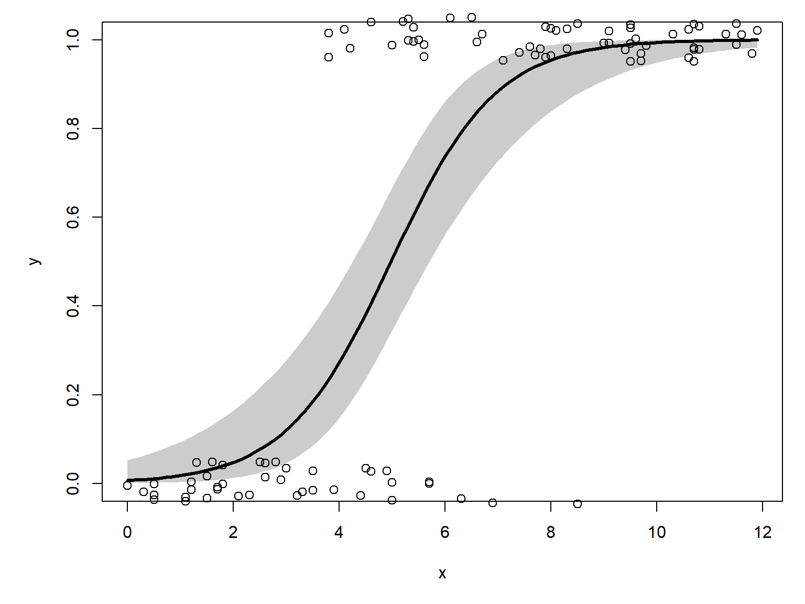
21.1.2 Example using real data
Let’s use the NEON data for a real example. If you don’t already have it, download the site-level richness and environmental dataset and put it in your working directory.
dx <- read.csv("dat-neon-site-rich-env.csv")Consider this plot of lemming species richness vs. mean annual temperature:
par(mar=c(5.1, 5.1, 1.1, 1.1))
plot(dx$mat, dx$lem,
xlab=expression(Mean~annual~temperature~(degree*C)),
ylab="Lemming species richness")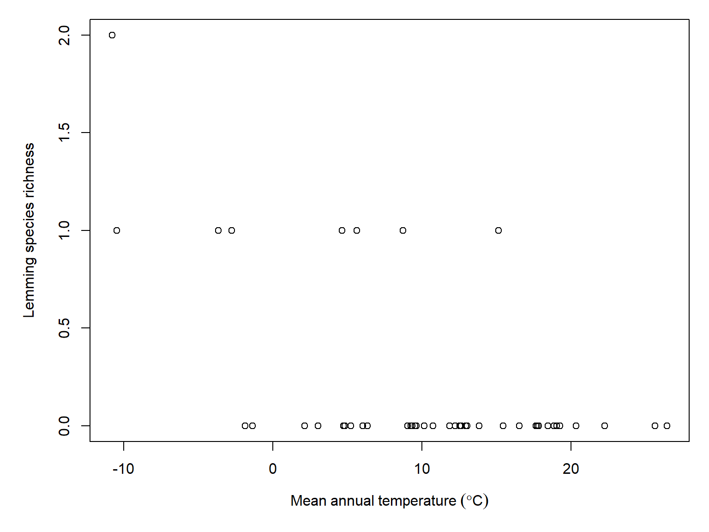
It looks like lemming species richness decreases with increasing temperature, but we should pump the brakes. The maximum richness is 2. Trying to model richness when it only varies between 0, 1, and 2 is going to be tough because there just isn’t very much information in the dataset. If we modeled whether there were any lemming species present, we don’t lose much information:
table(dx$lem)
0 1 2
38 7 1 Let’s convert lemming species richness to lemming presence-absence (1 and 0):
dx$lem.pr <- 1*(dx$lem > 0)Now compare mean annual temperature at sites with lemmings vs. those without.
# save this expression for plots
mat.expr <- expression(Mean~annual~temperature~(degree*C))
boxplot(mat~lem.pr, data=dx, xlab=mat.expr, horizontal = TRUE)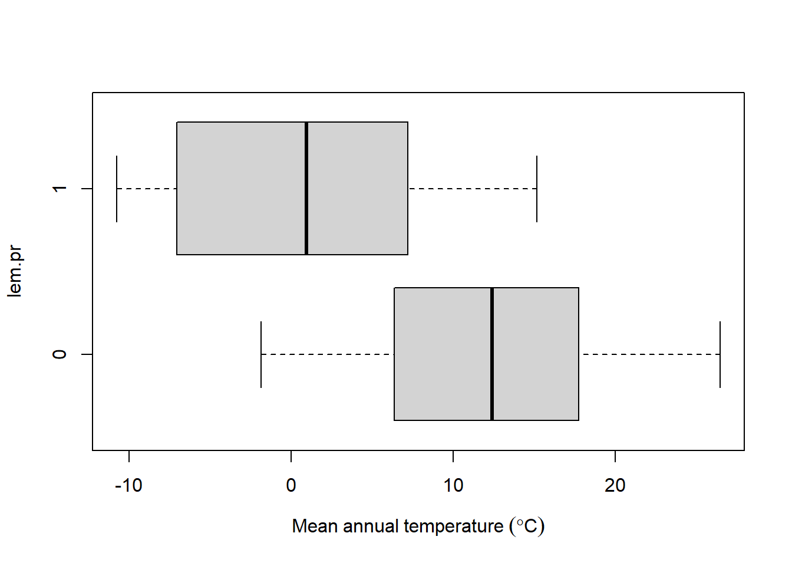
Looks like sites with lemmings (\(y=1\)) tend to be colder than sites without lemmings. Let’s test this relationship with logistic regression.
mod2 <- glm(lem.pr~mat, data=dx, family=binomial)
summary(mod2)
Call:
glm(formula = lem.pr ~ mat, family = binomial, data = dx)
Coefficients:
Estimate Std. Error z value Pr(>|z|)
(Intercept) -0.23038 0.57768 -0.399 0.69003
mat -0.19668 0.06988 -2.815 0.00489 **
---
Signif. codes: 0 '***' 0.001 '**' 0.01 '*' 0.05 '.' 0.1 ' ' 1
(Dispersion parameter for binomial family taken to be 1)
Null deviance: 42.507 on 45 degrees of freedom
Residual deviance: 29.807 on 44 degrees of freedom
AIC: 33.807
Number of Fisher Scoring iterations: 6The significant slope on mat confirms our suspicion that lemming presence is negatively correlated with temperature. The nonsignificant intercept is not a problem; it just means that the intercept is not significantly different from 0. Remember that 0 on the link scale–the logit scale–corresponds to a probability of 0.5. The model reduces the deviance by about 29.9%, which is okay for for this small of a sample size.
1-mod2$deviance/mod2$null.deviance[1] 0.298770121.1.2.1 Odds ratios
What does the slope in our fitted model, \(-0.20\pm0.07\), really mean? In a linear regression model, the slope is the change in expected \(y\) for a unit increase in \(x\). In logistic regression, the slope is often expressed as the odds ratio, which is just the slope exponentiated.
\[OR=e^{\beta_1}=\text{exp}\left(\beta_1\right)\]
The odds ratio, calculated as exp(coef(mod2)[2]) = 0.821, indicates that each 1 °C increase in mean annual temperature multiplies the odds of lemming presence (\(y=1\)) by 0.821. In other words, the odds of lemming presence decrease by approximately 17.9% for each additional degree Celsius.
Note that we express effects in terms of the odds that \(y=1\), not the probability. This is because odds gives us more flexibility to express changes in the relative likelihood of an event occurring than probability would. For example, if \(p\left(y=1\right)\) increases from 0.95 to 0.99, did \(y=1\) become \(0.99/0.95=1.04\) times more likely (a 4% increase in probability)? No, because an event with a probability of 0.95 is over 5 times less likely to occur. Express those probabilities as odds:
\[\text{Odds}\left(a\right)=\frac{0.95}{1-0.95}=\frac{0.95}{0.05}=19\]
\[\text{Odds}\left(b\right)=\frac{0.99}{1-0.99}=\frac{0.99}{0.01}=99\]
So the odds ratio is, or relative likelihood of \(a\) and \(b\) are
\[\text{OR}\left(a,b\right)=\frac{\text{Odds}\left(a\right)}{\text{Odds}\left(b\right)}=\frac{19}{99}\approx0.192\]
Event \(a\) is only about one-fifth as likely to happen as event \(b\) despite their probabilities being different by only 0.04.
21.1.2.2 Area under the curve (AUC)
Logistic regression is one way of solving what statisticians sometimes call a classification problem, where we want to use some set of predictor variables to classify observations into one category or another. The binary case is the simplest classification problem. The predictions of a logistic regression model will predict each observation to either be 0 or 1. We can use those predictions, and how often they are correct, to evaluate the efficacy of a logistic regression model.
We can evaluate a logistic regression model by the accuracy of its predictions. Such a model can predict a 1 or a 0 for every observation, and each prediction can be correct or incorrect:
| Actual outcome | Predicted positive (\(\hat{y}=1\)) | Predicted negative (\(\hat{y}=0\)) |
|---|---|---|
| Positive (\(y=1\)) | True positive (TP) | False negative (FN) |
| Negative (\(y=0\)) | False positive (FP) | True negative (TN) |
The table is often summarized as the true positive rate (sensitivity) and true negative rate (specificity).
The model sensitivity, or true positive rate, is the proportion of positive observations (\(y=1\)) that the model predicts to be positive (\(\hat{y}=1\)). It is calculated as:
\[\text{True positive rate (sensitivity)}:p\left(\hat{y}=1|y=1\right)=\frac{\text{True positives}}{\text{True positives}+\text{False negatives}}\]
The model specificity, or true negative rate, is the proportion of negative observations (\(y=0\)) that the model predicts to be negative (\(\hat{y}=0\)).
\[\text{True negative rate (specificity)}:p\left(\hat{y}=0|y=0\right)=\frac{\text{True negatives}}{\text{True negatives}+\text{False positives}}\]
- The sensitivity is the probability of a positive test given that the observation is positive.
- The specificity is the probability of a negative test given that the observation is negative.
For our fitted model of lemming presence, let’s define a function that returns whether the model predicts 1 or 0. The model actually predicts a probability, so we need to specify a cutoff to distinguish predicted 1s from predicted 0s. Let’s use 0.5.
pred.fun <- function(mod, cutoff){
1* (predict(mod, type="response") >= cutoff)
}#functionNow try it out:
pred.y <- pred.fun(mod2, 0.5)
ftable(pred.y~dx$lem.p) pred.y 0 1
dx$lem.p
0 36 2
1 4 4This means that the model sensitivity is \(4/\left(4+4\right)=0.5\), and the specificity is \(36/\left(2+36\right)=0.947\).
We don’t have to use a cutoff of 0.5. In fact, that choice is rather arbitrary. As a general rule, any time you make an arbitrary choice you should check some of the alternatives to see how your choice affected the outcome. Let’s test a range of cutoffs to see how our choice of cutoff affects the sensitivity and specificity. We can do that in a for() loop.
# vector of cutoffs to test
cutoffs <- seq(0.01, 0.99, by=0.01)
ncutoffs <- length(cutoffs)
# data frame to hold results
sens.df <- data.frame(cutoff=cutoffs,
spec=NA,
sens=NA)
# function to tally true positives and negatives
# can't use ftable because there won't always be
# a 2 x 2 result
tally <- function(pr, oy){
tp <- length(intersect(which(pr==1), which(oy==1)))
fn <- length(intersect(which(pr==0), which(oy==1)))
fp <- length(intersect(which(pr==1), which(oy==0)))
tn <- length(intersect(which(pr==0), which(oy==0)))
res <- c(tp=tp, fn=fn, fp=fp, tn=tn)
return(res)
}
for(i in 1:ncutoffs){
pred.y <- pred.fun(mod2, cutoffs[i])
result <- tally(pred.y, dx$lem.pr)
sens.df$sens[i] <- result["tp"]/(result["tp"]+result["fn"])
sens.df$spec[i] <- result["tn"]/(result["tn"]+result["fp"])
}#iIf we plot the sensitivity against one minus the specificity, we get the receiver operating characteristic curve (ROC). One minus the specificity is also known as the false positive rate.
sens.df$fpr <- 1 - sens.df$spec
par(mar=c(5.1, 5.1, 1.1, 1.1))
plot(sens.df$fpr, sens.df$sens,
type="s",
xlab="False positive rate",
ylab="Sensitivity")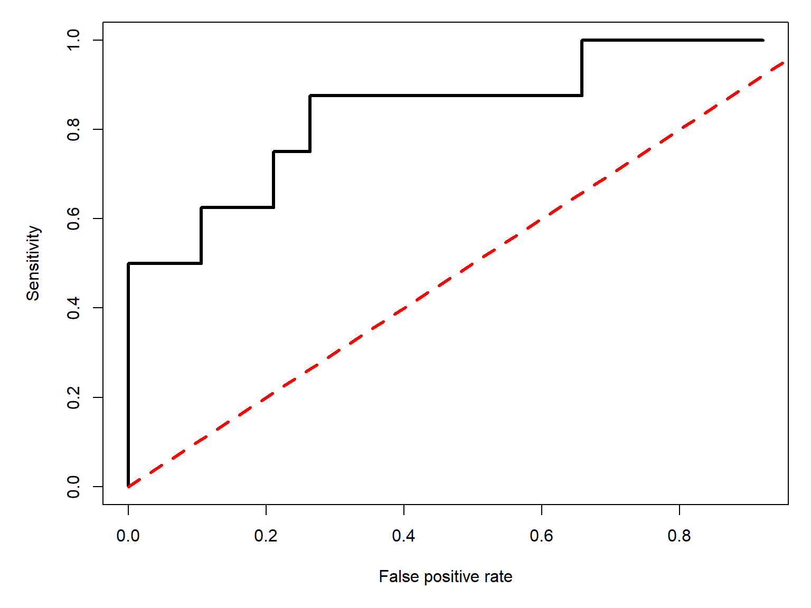
One interesting property of this curve is that a null model, where \(p(y=1)=0.5\), is a diagonal line.
par(mar=c(5.1, 5.1, 1.1, 1.1))
plot(sens.df$fpr, sens.df$sens,
type="s", lwd=3,
xlab="False positive rate",
ylab="Sensitivity")
segments(0, 0, 1, 1, lty=2, lwd=3, col="red")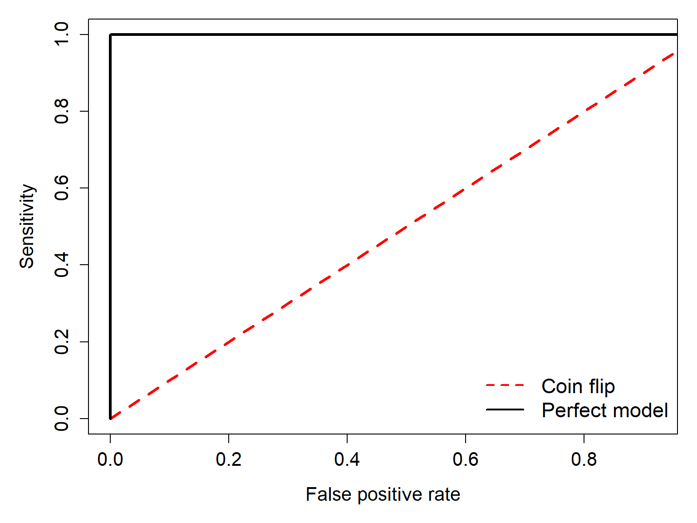
The area under the red curve, representing the model where \(p\left(y=1\right)=0.5\), or a coin flip, is 0.5. As a model’s performance improves, the true positive rate (sensitivity) must go up, and the false positive rate (\(1-\text{specificity}\)) must go down. This forces the model’s ROC curve up and to the left. In the limit, the area under that curve will be 1:

The area under the ROC curve (AUC) measures how well a logistic regression model distinguishes positive (\(y=1\)) from negative (\(y=0\)) observations. Although we derived AUC from the proportions of correct and incorrect classifications at different thresholds, it has a useful probabilistic interpretation: AUC is the probability that a randomly selected positive observation receives a higher predicted probability than a randomly selected negative observation, with ties counted as half a success. Thus, AUC is also defined as
\[AUC=p\left(\hat{p}_{y=1}>\hat{p}_{y=0}\right)\]
It is important to note that although AUC measures a model’s ability to discriminate between outcomes, it does not tell us whether the predicted probabilities are accurate (i.e., whether the model is well calibrated).
We can calculate the AUC of our fitted model as a series of rectangles:
# Sort by increasing false positive rate
roc.df <- sens.df[order(sens.df$fpr, sens.df$sens), ]
roc.df <- roc.df[,c("fpr", "sens")]
# Add endpoints if missing
roc.df <- rbind(
data.frame(fpr = 0, sens = 0),
roc.df,
data.frame(fpr = 1, sens = 1)
)
# Calculate trapezoid widths and average heights
widths <- diff(roc.df$fpr)
heights <- head(roc.df$sens, -1)
sum(widths * heights)[1] 0.8421053Or visually:
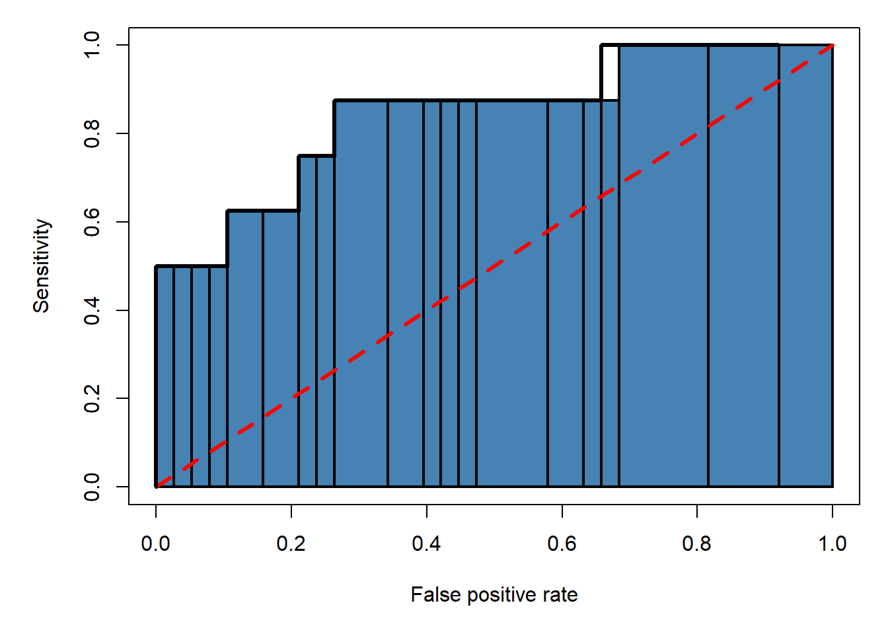
As much fun as it is to manually calculate ROC curves and definite integrals, we can get the ROC and AUC much more quickly using the functions in package pROC.
library(pROC)# generate predictions (probabilities)
p2 <- predict(mod2, type="response")
roc2 <- roc(dx$lem.pr ~ p2, plot = FALSE, print.auc = FALSE)print(roc2)
Call:
roc.formula(formula = dx$lem.pr ~ p2, plot = FALSE, print.auc = FALSE)
Data: p2 in 38 controls (dx$lem.pr 0) < 8 cases (dx$lem.pr 1).
Area under the curve: 0.8454plot(roc2)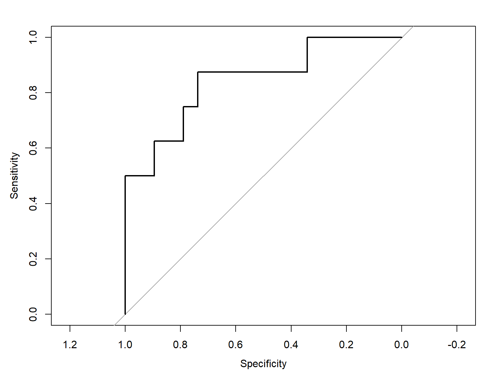
The AUC calculated by package pROC (0.854) is close to the value we calculated by hand. You should use the pROC version though, because our hand calculation was only an approximation.
If you don’t like the default figure produced by roc(), you can extract the sensitivity and sensitivity scores and make your own plot.
# 1- to orient axis correct way:
xspec <- 1-roc2$specificities
ysens <- roc2$sensitivities
plot(xspec,ysens, type="l")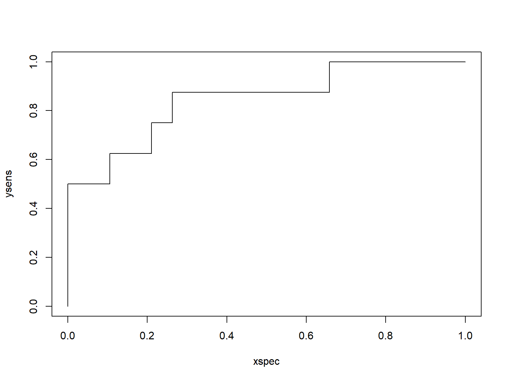
21.2 Binomial GLM for proportions
Proportional data describe the number of times that some event occurs, relative to the total number of times it could occur. Many phenomena that biologists study are expressed as proportions: proportion of individuals surviving, proportion of individuals with trait A, proportion of area covered by species X, and so on. Analyzing proportions is a lot like analyzing binary outcomes; i.e., logistic regression. In fact, they are both GLMs with a binomial family. All that differs is the n term.
Binomial regression is defined as
\[y_i=\frac{z_i}{n_i}\] \[z_i\sim Binomial\left(p=p_i,n=n_i\right)\]
\[\text{logit}\left(p_i\right)=\log{\left(\frac{p_i}{1-p_i}\right)}=\boldsymbol{\beta}\mathbf{x}\]
The only real differences between this and logistic regression above () are the \(n\) term in the binomial distribution, and the fact that in binomial regression we are analyzing the ratio of \(z_i\) to \(n_i\). If we set \(n_i\) to one, then binomial regression becomes logistic regression.
21.2.1 When should you use binomial regression?
In logistic regression the interest is in predicting the outcomes of single trials, while in binomial regression the interest is in predicting the proportion of observations in a certain state. How you should analyze your data depends on your question:
- If the question is about outcomes at the individual observation level, then use logistic regression.
- If the question is about rates or probabilities of an event occurring, then use binomial regression.
One good clue is to consider the level at which predictor variables are measured. If many observations share the same value of a predictor variable (or the same values of many predictor variables), then binomial regression might be the right approach because the sample unit is really the group. For example, if you want to model nestling survival in birds, all of the chicks within a nest would have the same values of any predictor variable that applied to the nest. Thus, binomial regression would be appropriate. If, however, there were chick-level predictors, then logistic regression would be appropriate. Think about what level of organization your predictor and response variables occur at, and what question you are really asking.
What if the number of trials is unknown?
This section assumes that you know how many trials each proportion represents. If you want to analyze proportions for which the number of trials is unknown, a binomial GLM is probably not the right tool. One option you can try instead is to apply a logit transform to the proportions, then fit a linear regression to the transformed values.
21.2.2 Example using simulated data
Let’s explore binomial regression by simulating some data.
# random number seed
set.seed(123)
# sample size
n <- 100
# x values
x <- runif(n, 0.001, 10)
# intercept and slope
beta0 <- 3
beta1 <- -0.75
# linear predictor
logit.eta <- beta0 + beta1*x
# inverse logit to convert to
# probability scale
eta <- round(plogis(logit.eta), 3)
# weights = sample sizes
# use same size for each observation for simplicity
wts <- rep(20, n)
# draw observed values
y <- rbinom(n, prob=eta, size=wts)/wts
# assemble to data frame
dr <- data.frame(x=x, y=y, w=wts)par(mar=c(5,5,1,1))
plot(x,y, ylim=c(0, 1))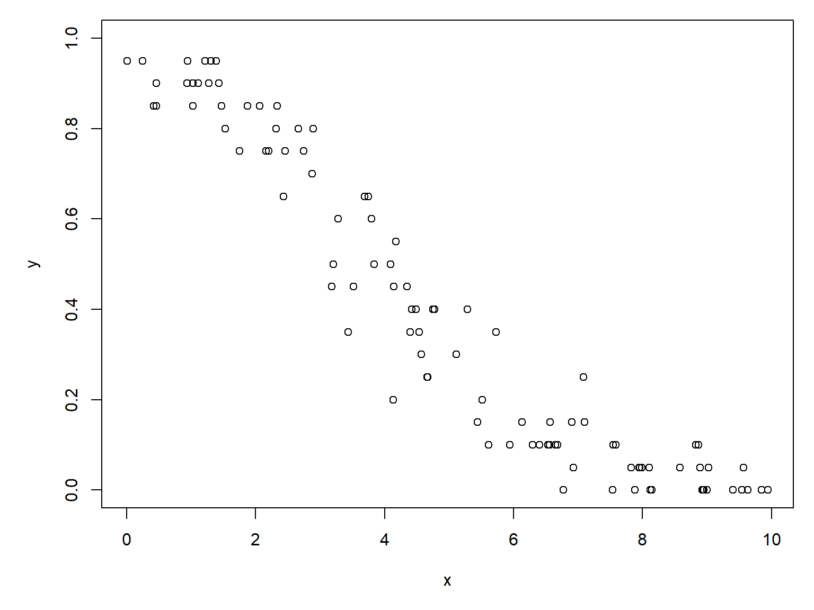
Linear regression would be inappropriate, because the predicted outcome of a linear model is not bounded to the domain of \(y\). Instead, we fit a binomial GLM using the weights argument to define the denominator of each observation.
mod3 <- glm(y~x, data=dr,
family=binomial, weights=dr$w)
summary(mod3)
Call:
glm(formula = y ~ x, family = binomial, data = dr, weights = dr$w)
Coefficients:
Estimate Std. Error z value Pr(>|z|)
(Intercept) 2.87937 0.14362 20.05 <2e-16 ***
x -0.74801 0.03206 -23.33 <2e-16 ***
---
Signif. codes: 0 '***' 0.001 '**' 0.01 '*' 0.05 '.' 0.1 ' ' 1
(Dispersion parameter for binomial family taken to be 1)
Null deviance: 1152.39 on 99 degrees of freedom
Residual deviance: 83.32 on 98 degrees of freedom
AIC: 326.82
Number of Fisher Scoring iterations: 4The slope and intercept estimates are very close to the truth. At this point, we can evaluate model fit with deviance explained, use AIC model selection, or whatever other interpretive post hoc analyses we need to. Just as with logistic regression, the odds ratio \(e^{\beta_1}\) or exp(coef(mod2)[2]) describes the multiplicative change in the odds that an individual “succeeds”. Remember that the \(p\) in the binomial part really refer to success probability in a trial. If our proportions here represent female sex ratio in experimental clutches of guppies, then the odds ratio
exp(coef(mod3)[2]) x
0.4733064 means that for every additional unit of \(x\), the probability that an individual within a clutch is female is reduced by about 53%.
Unlike binary logistic regression, we generally do not use AUC to evaluate binomial regression fitted to proportions. Although AUC can still be calculated and retains the same mathematical interpretation, it measures the model’s ability to distinguish individual successes from failures. In grouped binomial regression, however, the observations represent groups of trials, and our primary interest is usually in how accurately the model estimates the proportion of successes within each group. Consequently, AUC is generally less informative than measures such as deviance explained and comparisons of observed and predicted proportions.
21.2.3 Example using real data
Let’s use the NEON data for a real example. If you don’t already have it, download the site-level richness and environmental dataset and put it in your working directory.
dx <- read.csv("dat-neon-site-rich-env.csv")Consider this plot of the proportion of species present which are sciurids (psci) varies with mean annual temperature.
# proportion of species which are squirrels
dx$psci <- dx$sci / dx$totpar(mar=c(5,5,1,1))
plot(dx$mat, dx$psci)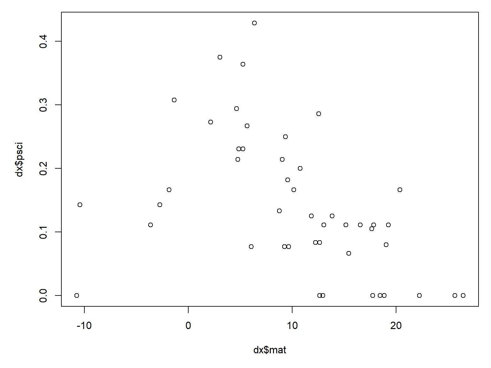
It looks like warmer sites tend to have proportionally fewer sciurid species. We can test that with a binomial GLM.
mod4 <- glm(psci~mat, data=dx, family=binomial, weights=dx$tot)
summary(mod4)
Call:
glm(formula = psci ~ mat, family = binomial, data = dx, weights = dx$tot)
Coefficients:
Estimate Std. Error z value Pr(>|z|)
(Intercept) -1.09543 0.18668 -5.868 4.41e-09 ***
mat -0.06095 0.01735 -3.512 0.000445 ***
---
Signif. codes: 0 '***' 0.001 '**' 0.01 '*' 0.05 '.' 0.1 ' ' 1
(Dispersion parameter for binomial family taken to be 1)
Null deviance: 48.155 on 45 degrees of freedom
Residual deviance: 35.675 on 44 degrees of freedom
AIC: 126.1
Number of Fisher Scoring iterations: 4Sure enough, it looks like there is a modest but statistically significant effect of mean annual temperature on proportional sciurid richness. The odds ratio, \(e^{-0.061}=0.941\), suggests that for every additional degree of mean annual temperature, proportional sciurid richness decreases by about 6%. However, the model only reduces the deviance by about 26% (\(1-\frac{35.67}{48.15}=0.26\)).
Now let’s plot the model predictions and their 95% CI.
# values for prediction
use.n <- 100
px <- seq(min(dx$mat), max(dx$mat), length=use.n)
# calculate predictions and 95% CI (link scale)
pred <- predict(mod4, newdata=data.frame(mat=px),
type="link", se.fit=TRUE)
mn <- qnorm(0.5, pred$fit, pred$se.fit)
lo <- qnorm(0.025, pred$fit, pred$se.fit)
up <- qnorm(0.975, pred$fit, pred$se.fit)
# inverse link function to get probabilities
mn <- mod4$family$linkinv(mn)
lo <- mod4$family$linkinv(lo)
up <- mod4$family$linkinv(up)And the plot:
par(mar=c(5, 5, 1, 1))
plot(dx$mat, dx$psci, type="n",
xlab=expression(Mean~annual~temperature~(degree*C)),
ylab="Proportional sciurid richness",
ylim=c(0, 1))
polygon(x=c(px, rev(px)),
y=c(lo, rev(up)), # REVerse either upper or lower
border=NA, col="grey80")
points(px, mn, type="l", lwd=3)
points(dx$mat, jitter(dx$psci, amount=0.05),
cex=1.1, pch=19, xpd=NA)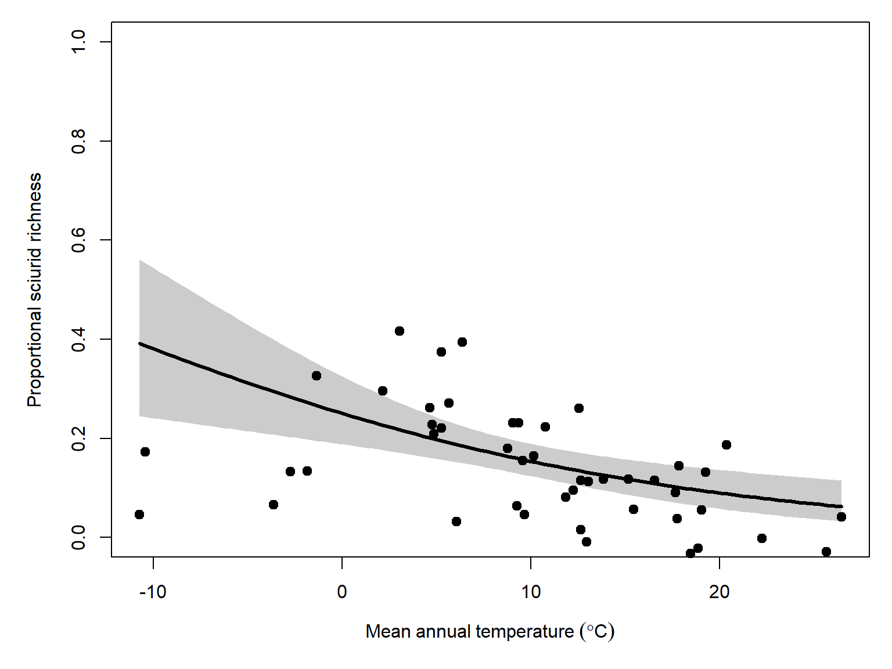
Just for fun, let’s extend the \(x\) range of prediction to convince ourselves that the predicted values will never extend beyond the \(\left[0,1\right]\) domain of proportions.
# values for prediction
use.n <- 100
px <- seq(-100, 100, length=use.n)
# calculate predictions and 95% CI (link scale)
pred <- predict(mod4, newdata=data.frame(mat=px),
type="link", se.fit=TRUE)
mn <- qnorm(0.5, pred$fit, pred$se.fit)
lo <- qnorm(0.025, pred$fit, pred$se.fit)
up <- qnorm(0.975, pred$fit, pred$se.fit)
# inverse link function to get probabilities
mn <- mod4$family$linkinv(mn)
lo <- mod4$family$linkinv(lo)
up <- mod4$family$linkinv(up)
par(mar=c(5, 5, 1, 1))
plot(dx$mat, dx$psci, type="n",
xlab=expression(Mean~annual~temperature~(degree*C)),
ylab="Proportional sciurid richness",
ylim=c(0, 1), xlim=c(-100, 100))
polygon(x=c(px, rev(px)),
y=c(lo, rev(up)), # REVerse either upper or lower
border=NA, col="grey80")
points(px, mn, type="l", lwd=3)
points(dx$mat, jitter(dx$psci, amount=0.05),
cex=1.1, pch=19, xpd=NA)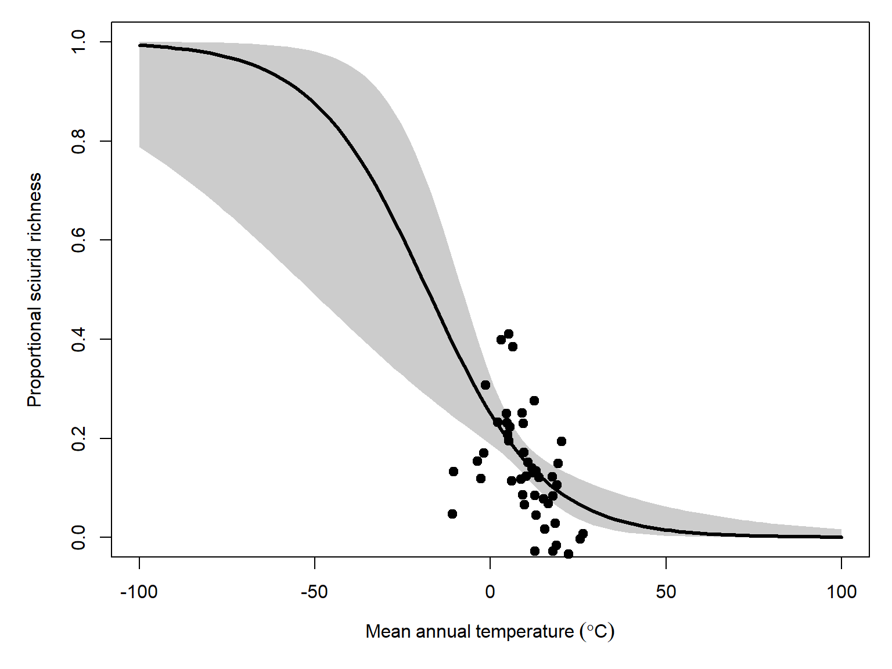